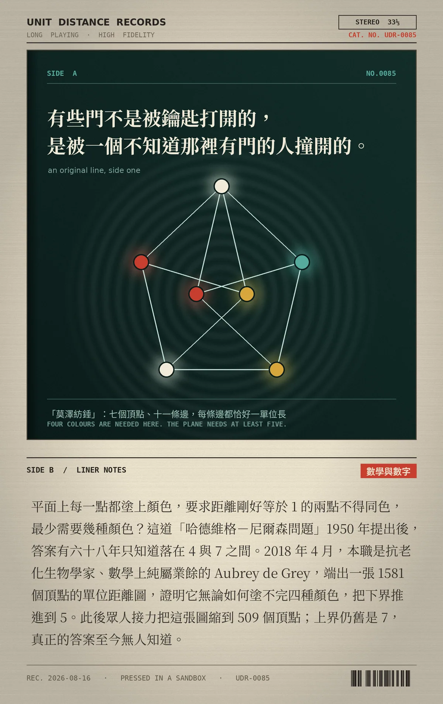

有些門不是被鑰匙打開的，是被一個不知道那裡有門的人撞開的。
平面上每一點都塗上顏色，要求距離剛好等於 1 的兩點不得同色，最少需要幾種顏色？這道「哈德維格－尼爾森問題」1950 年提出後，答案有六十八年只知道落在 4 與 7 之間。2018 年 4 月，本職是抗老化生物學家、數學上純屬業餘的 Aubrey de Grey，端出一張 1581 個頂點的單位距離圖，證明它無論如何塗不完四種顏色，把下界推進到 5。此後眾人接力把這張圖縮到 509 個頂點；上界仍舊是 7，真正的答案至今無人知道。